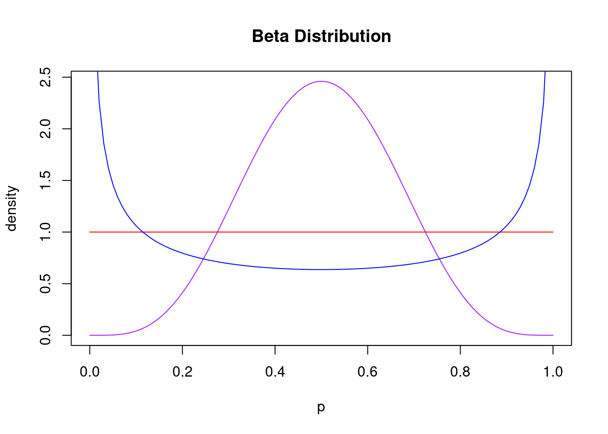
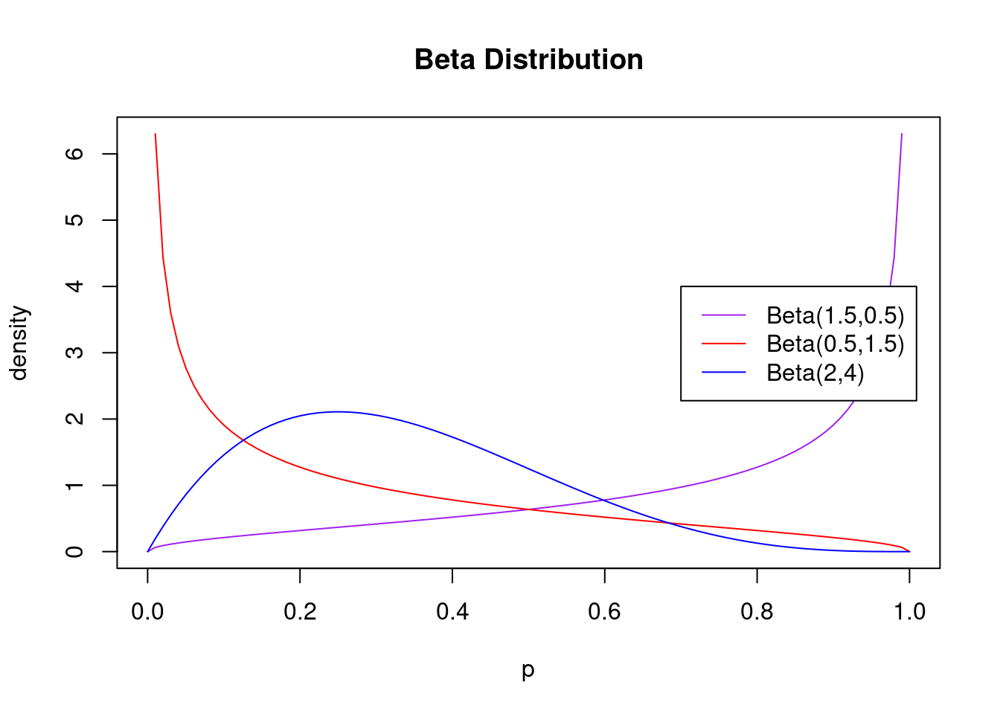

Probability Models
2022-01-24
1 Beta and Gamma
1.1 gamma function
Gamma of something plus 1 over the gamma of something equals that same something
\[\begin{equation} \Gamma(a) = \int_{0}^{\infty}t^{\alpha-1}e^{-t}dt, \alpha >0 \end{equation}\]
\[\begin{equation} \frac{\Gamma(a+1)}{\Gamma(a)} = \alpha \end{equation}\]
1.2 beta function
Beta function defined by \[\begin{equation} B(a,b) = \int_{0}^{\infty}t^{\alpha-1}(1-t)^{b-1}dt, b >0 \end{equation}\]
Beta can be expressed as a fraction of gamma functions.
\[\begin{equation} B(a,b) = \frac{\Gamma(a)\Gamma(b)}{\Gamma(a+b)} \end{equation}\]
PDF of beta, expressed by alpha and beta \[\begin{equation} f(\theta|alpha,\beta) = \frac{\theta^{\alpha-1}(1-\theta)^{\beta-1}}{\beta(\alpha,\beta)} \end{equation}\] Mean of the beta is \[\begin{equation} E(\theta) = \frac{\alpha}{\alpha+\beta} \end{equation}\]
where \(\alpha\) is the action parameter (pushes the beta distribution to the right of the graph). Means people have more propensity to churn, more values closer to 1 than 0 in our population, and \(\beta\) is the inaction parameter (pushes the peak of the beta distribution to thel eft of the graph), meeans more values closer to 0 thatn 1, means a low propensity to churn. Compare \(alpha\) and \(\beta\) to 1, where either is high if it is greater than 1. If both \(\alpha\) and \(\beta\) = 1, results in uniform.
1.3 shapes of beta distribution
#define range
p = seq(0, 1, length=100)
#create plot of Beta distribution with shape parameters 2 and 10
plot(p, dbeta(p, 5, 5), type='l', ylab = 'density',
col = 'purple', main = "Beta Distribution")
lines(p, dbeta(p,1,1), col = 'red')
lines(p, dbeta(p,0.5,0.5), col = 'blue')
legend(.7, 4, c('Beta(5,5)','Beta(1,1)','Beta(0.5,0.5)'),
lty=c(1,1,1),col=c('purple', 'red', 'blue'))
#define range
p = seq(0, 1, length=100)
#create plot of Beta distribution with shape parameters 2 and 10
plot(p, dbeta(p, 1.5,0.5), type='l', ylab = 'density',
col = 'purple', main = "Beta Distribution")
lines(p, dbeta(p,0.5,1.5), col = 'red')
lines(p, dbeta(p,2,4), col = 'blue')
legend(.7, 4, c('Beta(1.5,0.5)','Beta(0.5,1.5)','Beta(2,4)'),
lty=c(1,1,1),col=c('purple', 'red', 'blue'))